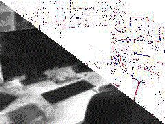

|
I'm currently a 3rd year PhD student in 3D Vision lab at Seoul National University, advised by Prof. Young Min Kim. My research is focused on building practical applications for 3D data, spanning the fields of computer vision and neural rendering. I will join Snap Research as a research intern this summer (May.2024) in the computational imaging team. Email / CV / LinkedIn / Google Scholar |
|
Research Keywords: Motion Generation, Text-to-3D, Neural Rendering. |

|
Inwoo Hwang, Hyeonwoo Kim, and Young Min Kim CVPR, 2023 Highlight arxiv | paper | video | project page A method to automatically create realistic and part-aware textures for virtual scenes composed of multiple objects. |

|
Inwoo Hwang, Hyeonwoo Kim, Donggeun Lim, Inbum Park, and Young Min Kim Eurographics short, 2023 paper | video A method to process sparse, noisy point cloud input and generate high-quality stylized output. |
|


|
Inwoo Hwang, Junho Kim, and Young Min Kim WACV, 2023 arxiv | paper | video | project page A Neural Radiance Field (NeRF) derived from event data, which serves as solutions for various event-based applications and highly robust to sensor noise. |


|
Junho Kim, Inwoo Hwang, and Young Min Kim CVPR, 2022 arxiv | paper | video | project page A simple and effective test-time adaptation algorithms for event-based object recognition. Successfully adapt classifiers to various external conditions. |

|
Junho Lee, Junhwa Hur, Inwoo Hwang, and Young Min Kim IROS, 2022 paper | video A real world grasping algorithm that can generalize to transparent and opaque obejcts via masks. |
Honors and AwardsExcellent Research Talent Fellowship, from BK21, 2023 fall Hyundai Motor Chung Mong-Koo Scholarship, 2022 to current University Mathematics Competition, Field 1 for Mathematics Major, Gold Medal, 2020 President Science Scholarship (Field: Mathematics), 2016 to 2021 Final Korean Mathematical Olympiad, Excellence award, 2015 |
EducationSeoul National University, Seoul, Korea, Mar. 2022 - Present M.S./Ph.D. in Electrical and Computer Engineering Seoul National University, Seoul, Korea, Mar. 2016 - Feb. 2022 B.S. in Electrical and Computer Engineering Seoul Science High School, Seoul, Korea, Mar. 2013 - Feb. 2016 |
Academic ActivitesConference Reviewer: CVPR, ICCV, ICRA Journal Reviewer: RA-L |
|
Design / source code from Jon Barron's |